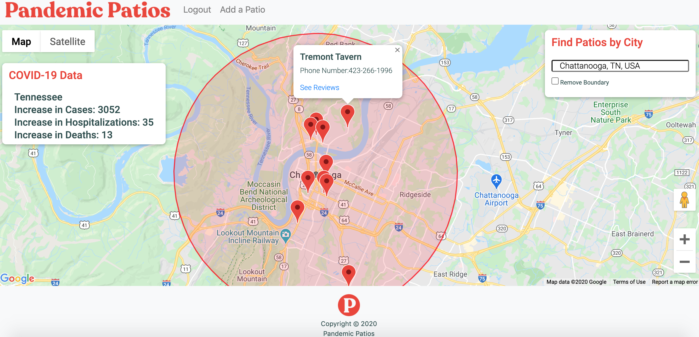
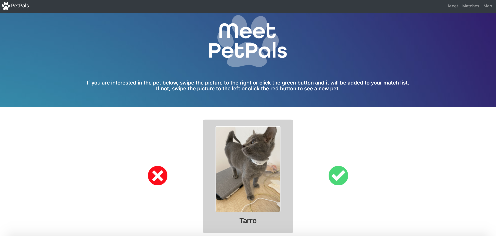

Projects
Pandemic Patios
Pandemic Patios is a COVID-era app that allows users to search for and review safe outdoor dining spaces in their area. Once logged in, users can add patios and review existing patios. While not logged in, users can still see reviews of patios by city.
See the source code here!Built with JavaScript, Node.js, Passport.js, Express.js, Sequelize, PostgreSQL, HTML, CSS, Google Maps JavaScript API, Google Places API, and the Covid Tracking Project Data API.
PetPals
PetPals is an app that provides a "Tinder-like" platform for pet adoptions. Users can swipe left or right on available pets and then link to the pet’s PetFinder adoption listing.
See the source code here!Built with JavaScript, HTML, CSS, Bootstrap, jQuery, jQueryUI, and PetFinder API.